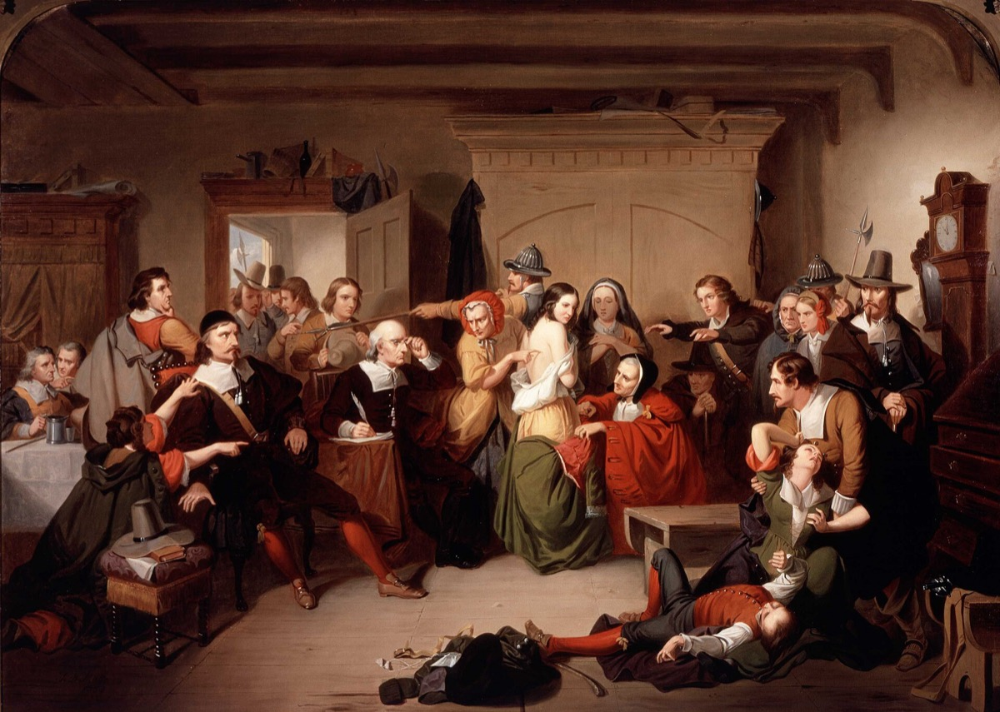
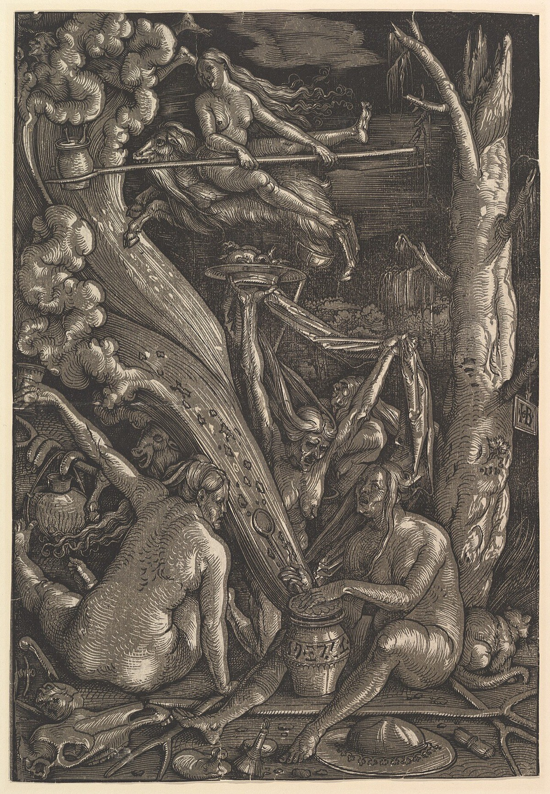
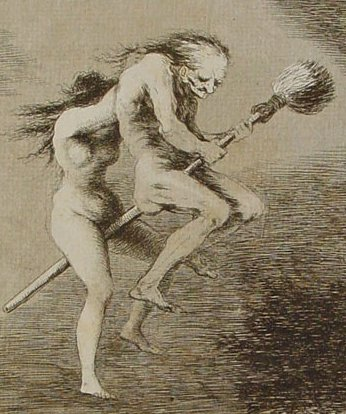

“Now Hell and Heaven grapple on our backs, and all our old pretence is ripped away.”Arthur Miller, The Crucible (1953)
On the morning of the 6th of February, 2013, in the highland town of Mount Hagen in Papua New Guinea, a twenty-year-old mother named Kepari Leniata was dragged from her home by a crowd, accused of having used sanguma — witchcraft — to kill the six-year-old child of a neighbour. The neighbour’s boy had died the day before of natural causes that a hospital could have named. The crowd doused Leniata with petrol while she protested her innocence, set her on fire on a pile of tyres in the middle of the road, and watched her die in front of perhaps a hundred witnesses, several of whom photographed her death with their mobile phones and posted the images online within the hour. Police arrived. No one was prosecuted. Leniata’s six-year-old daughter, who had watched her mother burn, was taken in by a local NGO. The case attracted international attention because the photographs were unbearably good. It was not, by the standards of contemporary Papua New Guinea, anything unusual; the United Nations Human Rights Office estimates that several hundred women a year are killed there as suspected witches, and that the number is rising.1
We open with Kepari Leniata, and not with Salem in 1692, because the rest of this chapter will be easier to read if you understand from the first paragraph that this is not a chapter about something that used to happen to other people. Witch-hunting is, on the most recent United Nations data we have, killing on the order of a thousand people a year, on five continents, in our own decade. Roughly eighty per cent of those killed are women. Roughly twenty per cent are children. The mechanism, in every well-documented modern case, is the one the European pattern produced for three centuries: a community under stress identifies a marginal member as the source of an unexplained misfortune; the accusation circulates; institutions either intervene or fail to; and a particular human being is broken or burned.
The chapter is about this pattern — the deep, recurrent, cross-cultural one — and what we now understand about why it keeps coming. The historical European witch craze of 1450 to 1750 is the most-studied instance and we will not slight it. The 1692 panic in Salem is the canonical Anglophone case and we will give it its careful pages. But the most honest thing this chapter can do for the reader is to refuse the framing under which the witch hunt is a fact about their past. It is a fact about our present. The same template is in continuous use, in the same gender pattern, with the same psychological mechanisms, in the same kinds of communities under the same kinds of stress.
The witch hunt is not a fact about other people’s past. It is, on the most recent United Nations data, killing on the order of a thousand people a year, in our own decade, on five continents.
The Long PatternThe European Witch Craze, 1450–1750

The European witch craze did not begin in the Middle Ages, as the popular memory has it. The high medieval Church, on the whole, declined to take seriously the existence of witches, treating belief in their powers as a kind of pagan superstition that Christians should know better than to hold. The shift happened late and abruptly. In 1484 Pope Innocent VIII issued the bull Summis desiderantes affectibus, formally endorsing the prosecution of witchcraft as heresy; two years later the Dominican inquisitors Heinrich Kramer and Jakob Sprenger published the Malleus Maleficarum, the manual we have already met in the chapter on possession. The Malleus codified what would become the standard procedure: how to identify a witch, what evidence to seek, how to extract a confession, what to do with the confessed. The new printing press distributed it more widely than any prior theological work. Within fifty years, the prosecution of witches as a capital crime was systematic across Catholic and (after the Reformation) Protestant Europe alike.2
The numbers are still debated by historians, but the modern careful consensus is that between roughly 1450 and 1750, somewhere between thirty thousand and sixty thousand people were executed for witchcraft in Europe, with the heaviest concentration of trials in the German-speaking lands, eastern France, the Low Countries, Scotland, and Switzerland. The figure should be read as a floor; many local trials are no longer reflected in surviving records. Approximately three quarters of those executed were women. They were disproportionately old, poor, widowed, and marginal — women without male protectors in communities in which female autonomy was, as we will see, increasingly suspect. They were not, by the standards of any subsequent era, witches; they were ordinary women, often loved by neighbours who would, when the trial began, supply the small testimonies that condemned them.3
The legal procedure was, almost without exception, structurally unfalsifiable. A suspect’s denial was evidence of demonic cunning; her confession, evidence of guilt. The torture used to extract confessions produced, with reliable regularity, the same set of stock admissions: a pact with the Devil, attendance at a sabbath, sexual congress with demons, the names of further witches — usually neighbours she had quarrelled with — whom the inquisitors then took up. The legal “tests” were of the same character: the witch’s mark (any blemish on the body); the swimming test (if she floated she was a witch and was killed; if she sank she was innocent and had drowned); the prayer test (any error in reciting the Lord’s Prayer was diagnostic). No accused person could win.
This is one of the formal features of every great panic, in this chapter and elsewhere in this volume: the rules of evidence are arranged so that disconfirmation is impossible. Once a person is in the door, the procedure produces a guilty verdict. The mechanism is recognisable from Chapter Three (the medium who could not be falsified), Chapter Six (the astrologer whose predictions are vague enough to never quite be wrong), and Chapter Nine (the conspiracy theory in which all evidence becomes more evidence). It is the same shape, applied here to women instead of to mediums or astrologers, and the cost was tens of thousands of lives.
A Case StudySalem, 1692
The Anglophone canonical case is the Salem outbreak of 1692, which has the unusual virtue of being well-documented from start to finish and over in a single year. The course of events repays close reading, because it is structurally identical to almost every panic before and since.4
In January 1692, in the household of Reverend Samuel Parris in Salem Village, Massachusetts, his daughter Betty (nine) and his niece Abigail Williams (eleven) began suffering what contemporaries described as “fits” — convulsive episodes, screams, contortions, complaints of being pricked by invisible pins. The local physician examined them and concluded the cause was “not natural”; the contemporary diagnostic frame for “not natural” was witchcraft. Pressed by family and by the minister to name their tormentors, the girls eventually named three women: Tituba (an enslaved woman of probably Caribbean origin in the Parris household), Sarah Good (a homeless beggar), and Sarah Osborne (an elderly woman estranged from her neighbours). Three classically marginal figures.
What followed was, in retrospect, the cleanest social-psychological cascade of the colonial era. Tituba, under questioning, confessed at length — possibly because confession was the only path she saw to survival — and named further witches in turn. The accusations spread outward in concentric rings of grievance: who had cheated whom; who had refused alms; whose pig had died after a quarrel. Within five months, more than a hundred and fifty people had been accused, sitting in a jail that ran out of cells. Between June and September, nineteen were hanged. One, Giles Corey, was pressed to death under stones for refusing to plead. Several more died in custody.
The panic ended almost as suddenly as it began, and the way it ended is the most important thing about it. In October 1692, the colony’s most respected theologian, Increase Mather — father of the more famous Cotton — published Cases of Conscience Concerning Evil Spirits, in which he argued that the legal use of spectral evidence — the testimony of an afflicted person that the accused’s apparition had tormented them — was untenable, because Satan could (as a matter of orthodox theology) take the form of an innocent person. The Governor read it, was persuaded, and ordered the courts to exclude spectral evidence. Without spectral evidence, almost every remaining case collapsed. The trials stopped. The remaining prisoners were freed by spring. Several of the accusers, in subsequent years, retracted their accusations. One of the judges, Samuel Sewall, stood in church in 1697 and made a public confession of personal shame for his role.5
The lesson of Salem — useful for every chapter in this volume — is that panics end not when individual believers change their minds, but when an institutional rule changes the conditions under which the panic could be sustained. Mather did not argue that witches did not exist; he argued that the courts could not reliably identify them. The change was procedural. The deaths stopped immediately. Reform of institutions, not refutation of individuals, ended Salem. It is one of the more important historical lessons in this whole literature, and it bears directly on the current moral panics of our own decade.
The Economic ReadingFederici and the Body of the Witch

Why did the European witch craze happen when it happened, in the people it happened to? The standard older account — that the trials were a hangover of medieval superstition, mostly cleared away by the Enlightenment — is incomplete, because the timing is wrong. The hunts intensified, not relaxed, during the Renaissance and the early Reformation; they peaked between 1560 and 1630, the same century that produced Galileo, Descartes, and the scientific revolution. The men sending women to the stake were not the survivors of the Dark Ages. They were our intellectual ancestors.
The most influential modern reframing of this puzzle is the Italian-American historian Silvia Federici’s Caliban and the Witch (2004). Federici argued that the witch craze cannot be understood as a religious episode at all. It must, she said, be understood as a particular phase of the transition from feudalism to early capitalism — a transition that required, in her telling, the breaking of the older European peasant commons, the criminalisation of women’s reproductive autonomy, the destruction of the role of the village healer (almost always a woman) by the new male medical establishment, and the disciplining of women’s sexuality and labour into the forms a wage economy required. The witch hunts, in this reading, were the bloody enforcement arm of a class transition we now see only in its outcome. The women killed were the ones in whose lives the older order had given some autonomy — widows with land, herbalists and midwives, those who had not yet been absorbed into the new sexual and economic discipline.6
Federici’s account has been influential, especially outside the discipline of professional witch-trial history, and it captures something the older religious accounts plainly miss — the consistent gender pattern, the consistent class pattern, the concentration in periods of economic upheaval. It has also been criticised by historians who note that the worst trials happened in regions where the “transition to capitalism” was least advanced, that male-on-male denunciation was common in some German trials, and that the picture of pre-modern women’s autonomy as broadly intact is itself a romanticisation. The honest reading is that Federici’s economic framing illuminates real patterns that the older accounts neglected, but it does not, by itself, account for everything; the panic was overdetermined, with religious, economic, social, and gendered components, and the proportions of each varied by region.7
Whatever the right historical synthesis, one feature of the European case is undeniable and is repeated in every modern outbreak we will examine: the witch is, with very few exceptions, the marginal woman in the community whose autonomy the community has become uncomfortable with. The widow who manages her own property. The herbalist whose remedies sometimes work. The unmarried woman past childbearing who answers to no household. The midwife who has watched a child die in delivery. These were the European witches. They are, in their local form, also the modern ones.
The AccuserThe Person Who Sees Evil
It is a strange omission of the popular history of witch hunts that we know far more, in most cases, about the women who were killed than about the people who killed them. Who accuses? Who sustains the accusation through the months it takes to bring it to trial? What kind of person can stand in a court and swear that a woman they have known for forty years is in league with the Devil?
The empirical literature on accusers, where we have it, is sobering. In Salem the most prolific accusers were children — the “afflicted girls” whose convulsive testimony drove the early phase of the trials. In other panics, the most prolific accusers have been priests, magistrates, traditional healers, neighbours with longstanding grievances, and family members of the dead child whose death the alleged witch is said to have caused. The accuser is not, in most cases, an outsider. The accuser is a member of the same community, with a particular standing in it, who has reasons to need a witch.
What modern social psychology can add to the historical record runs along the following lines.
The accuser often suffers a real recent loss — a child’s death, a failed harvest, a long illness — for which the available causal explanations are unsatisfying. The agency-detection mechanism we treated in Chapter One supplies, with characteristic force, the desire for a responsible agent. The community supplies the candidate. The accusation, once made, gives the accuser a number of psychological goods that are easy to underrate: a meaningful explanation for the loss, a community of fellow accusers, a role in the proceedings, a feeling of taking action against an evil that has hurt them. These goods are real, and they are what most of the modern de-radicalisation literature on conspiracy belief is also describing.
And there is the particular dynamic of the small community, in which the witch is almost always a known person. A useful witch is one against whom the accuser can specify particular grievances — the time she refused to help with the harvest, the time she muttered something after being denied a meal, the time her cat was seen near the child’s window the night the child sickened. The witch trial is, structurally, the public processing of the community’s small private resentments by a procedure that promises to resolve them. Once you have seen this pattern, you cannot un-see it in any of the panics from Salem onward.
The Present TenseWhat Is Happening Now
The hardest fact in this chapter, harder than anything in the historical sections, is that witch-hunting is at present a vigorous global phenomenon. Four major modern outbreaks deserve specific note.
West African child-witch accusations. Across Nigeria, the Democratic Republic of Congo, Angola, and parts of Ghana, the last twenty years have seen an explosion of accusations of witchcraft against children. The accusers are often parents or step-parents; the catalysts are commonly the deaths of younger siblings, illness, or family financial collapse. The accusations are validated, and often initiated, by certain Pentecostal “deliverance” ministers who run profitable exorcism businesses. UNICEF, in a 2010 report and subsequent studies, estimated tens of thousands of children at any given time in West Africa as accused, abandoned, abused, or killed under witchcraft accusations. The Akwa Ibom State Government in Nigeria passed the Child Rights Act 2008 in part as a response. Enforcement remains poor.8
Indian dayan killings. In the tribal belt of Jharkhand, Bihar, Chhattisgarh, and Odisha, accusations of dayan, tonhi, or chudail — the local words for witch — produce, by Indian National Crime Records Bureau figures, around 150 to 200 documented killings per year, with the true figure likely several times higher because of underreporting. The targets are overwhelmingly widows, women with land disputes, or women who have refused unwelcome sexual advances. Several Indian states have witch-hunting prevention acts; the Jharkhand Act of 2001 is the best-known. Prosecution remains rare; conviction rarer.9
Papua New Guinea sanguma killings. The case of Kepari Leniata with which this chapter opened was one of perhaps two hundred per year in PNG’s highlands. The pattern follows the European template with disturbing precision: an unexplained illness or death; an accusation against a local woman; a community gathering; torture to extract a confession; killing. The PNG Sorcery Act of 1971 made witchcraft itself a defence in homicide cases; it was repealed in 2013 in the wake of Leniata’s death, after the UN Special Rapporteur on extrajudicial executions visited and reported. Killings have continued.10
Saudi capital cases. In Saudi Arabia, sorcery (sihr) is a capital crime under Sharia interpretation. Between 2010 and the present, several execution cases have been carried out under this charge, with credible reports from Amnesty International and Human Rights Watch documenting at least a dozen confirmed beheadings for sorcery. The accused are frequently migrant domestic workers from Africa and South Asia; the “evidence” in court documents is structurally identical to that of seventeenth-century Europe.11
The pattern in each of these modern outbreaks is, with depressing precision, the European pattern. Marginal women (or in West Africa, children), in communities under economic and epidemic stress, accused by relatives or neighbours, in a procedure where denial is itself evidence, with institutional structures either complicit or absent. We are not looking at four different problems. We are looking at one problem, in four current settings.
The Objection That Matters“But Some People Really Do Claim to Be Witches”
An honest reader, having followed the argument this far, may raise a last objection. Aren’t you slightly stacking the deck? In the period you are describing, there really were people — cunning women, folk healers, hedge-witches, modern Wiccans — who described themselves as practitioners of magic. The trials were not invented from nothing. There really were people doing what they called witchcraft. Doesn’t that complicate the picture?
It does, but not in the direction the objection suggests. The honest historical record contains, for the period of the European trials, four distinct things which are usually run together and which should be carefully separated.
The first is the existence of cunning folk — the village magical practitioners, mostly women, who offered services for hire: love charms, lost-object divination, herbal remedies, blessings of cattle. These were real people, and their existence is well-documented in court records of the period, where they appear as both defendants and witnesses. Their work was, in the great majority of cases, ordinary folk medicine and ritual reassurance that the modern equivalent would call alternative therapy. They did not, on any honest reading, possess supernatural powers; what they offered was the placebo-and-counsel work we discuss in detail in the next chapter.12
The second is the existence of a small number of people, in any age including the present, who sincerely believe they have made a pact with the Devil, hold a witches’ sabbath, or possess malevolent powers. These cases, where well documented, are almost always cases of severe mental illness (cf. James Tilly Matthews in the last chapter) or of fantasies that the believer would not be able to act on. They are not the people the witch trials prosecuted.
The third is the legal category created by the Malleus Maleficarum and its successors: a woman who has, through a deliberate alliance with Satan, acquired the supernatural power to harm her neighbours. This is the witch the trials punished. This person did not exist. She was a legal fiction, constructed to make a panic actionable, and applied to women in whose lives the actual fact-pattern was a mix of category one (folk healing), category two (in a few cases, mental illness), and most often category four below.
The fourth is the entirely innocent woman against whom no charge at all could honestly be brought, who was nonetheless caught in the procedure described above, tortured into a confession, and executed. This is the population the trials largely killed. The historical record is unambiguous on this point. The great majority of European women executed for witchcraft were people who, by any honest reading, were not doing anything worth killing them for — not even within the worldview of the court that killed them, were the court somehow able to see through its own procedures.
The objection, then, points to a real complexity but resolves into a simple verdict. There were practitioners of folk magic. There were a few clinically ill people who believed in their own powers. There was a legal fiction defining a kind of person who did not exist. And there were many, many women who fit into none of these categories and were killed anyway. The trials were, on every honest historical assessment, mass killings of innocents under cover of a category that could not be filled. That is what the modern outbreaks are too. The objection does not soften the verdict. It refines it.
The witch the trials punished was a legal fiction, constructed to make a panic actionable. The women killed were, by any honest reading, not doing anything that could have justified the killings even within the court’s own worldview.
What Stops a PanicProcedure, Not Persuasion
The most useful single finding in the entire literature on witch-hunting is what we already met in the Salem section: panics end when the procedural rules that sustain them are changed, not when individuals are talked out of their beliefs. Increase Mather did not refute the existence of witches. He removed the kind of evidence the courts could use to convict them. The trials stopped within weeks.
The pattern repeats. The European trials wound down in the late seventeenth and eighteenth centuries not because believers became sceptics, but because reforming jurists and parliaments first restricted, and then abolished, the legal use of torture to extract confessions and the legal admissibility of spectral evidence. Once it became procedurally difficult to convict, accusers stopped accusing and prosecutors stopped prosecuting. Belief in witches lingered, in the popular imagination, for generations after the courts had stopped killing for it.
This is one of the more important lessons in this volume, and we say it again: institutional reform, not individual persuasion, is what ends a panic. The right Pentecostal pastor in West Africa can save lives by refusing to validate accusations from his pulpit; the right Indian magistrate by enforcing the witch-hunting prevention acts that already exist on the books; the right PNG provincial government by allocating the modest budget required for protection orders. None of this requires that anyone’s deep beliefs change. It requires that the procedures by which beliefs are translated into killing be made harder to use.
“How does this keep happening?”
From Salem 1692 to Mount Hagen 2013, the pattern. Six who have looked at it.
“Six hundred years of records and the structure does not change. A community under stress; a marginal woman; an accusation; an unfalsifiable procedure; a body. The actors think they are responding to the present emergency. They are reciting a template they did not write.”
“An unexplained death is intolerable. The agency-detection device produces an agent. The community produces a candidate. The procedure produces a confession. Every step is normal human cognition. The harm is the combination.”
“The witch is almost always the woman in whose autonomy the community has become uncomfortable. The widow with land; the herbalist whose remedies sometimes work; the older woman without male protection. The accusation is the way the community withdraws her protection without admitting to itself that this is what it is doing.”
“In the modern cases I have seen up close, the accuser is almost always a grieving person whose loss has no acceptable cause. The accusation is a kind of false therapy. It does not work; the grief is not actually resolved; and the cost is paid by someone else. But the satisfaction is real enough at the moment of accusation to keep producing accusers, generation after generation.”
“Salem ended in the month the courts excluded spectral evidence. Every other panic in the record ended the same way — procedural reform, not persuasion. Where modern witch-killings persist, the procedures persist. Where they have been reformed and enforced, the killings drop. The mechanism we have for stopping this is institutional, and it is the one we are not using.”
“Behind every accusation is an unmet grief. Behind every accused is a person who, by being marginal, was already easier to lose. The deepest preventative is not a reformed court. It is a society in which there are not so many marginal women, and not so many griefs left unattended, that the witch hunt has the constituency it has had for six hundred years.”
Myth vs. RealitySetting the Record Straight
What Is Often Said
“The witch trials were a medieval superstition that the modern world has outgrown. The number killed has been exaggerated by feminist scholarship; the panic was a religious episode driven by a Catholic Church that the Reformation eventually corrected; the lessons are interesting historically but not currently relevant.”
What the Evidence Shows
The witch trials happened in the Renaissance and early modern period — the age of Galileo and Descartes — not in the medieval centuries. The number killed in Europe is firmly between 30,000 and 60,000 documented executions, almost certainly higher in fact, and overwhelmingly women. Protestant lands prosecuted as enthusiastically as Catholic ones. And witch-hunting is, by United Nations data, a continuing global phenomenon killing roughly a thousand people per year, on five continents, in our own decade — in Papua New Guinea, in West Africa, in tribal India, in Saudi Arabia. The pattern is current, not historical.
The lines worth carrying out of this chapter.
- Witch-hunting is not a fact about other people’s past. On the most recent UN data it kills on the order of a thousand people a year, on five continents, in our own decade. The pattern is current.
- The witch the trials punished was a legal fiction. The women killed were, in the overwhelming majority, not doing anything that could have justified the killings even within the court’s own worldview.
- The witch is almost always the marginal woman — the widow, the herbalist, the unmarried older woman — in whose autonomy the community has become uncomfortable. The accusation is the way her protection is withdrawn.
- The procedural rules of every panic are arranged so that disconfirmation is impossible. The witch’s mark, the swimming test, the prayer test, spectral evidence — the structure recurs in every panic in this volume, applied here to women instead of to mediums or astrologers.
- Panics end when procedures change, not when individuals do. Salem ended in October 1692 when spectral evidence was excluded. Every other panic in the record has ended the same way. Institutional reform, not individual persuasion, is the working tool.
- Behind every accusation is an unmet grief. The deepest preventative is a society in which there are fewer marginal women, and fewer griefs left unattended, than the witch hunt has historically required as its constituency.
If you keep one sentence: the witch hunt is one of the most recurrent and current patterns of human cruelty, it is structurally the same every time it appears, and the way to stop the next one is not to argue with the accusers but to make it impossible for the accusation, once made, to kill.
Research ReferencesSources & Notes
- ReferenceUN Human Rights Office (OHCHR), reports on witchcraft-related violence and the case of Kepari Leniata (2013–2017); Amnesty International, Papua New Guinea case files. See also Forsyth, M., “The regulation of witchcraft and sorcery practices and beliefs,” Annual Review of Law and Social Science (2016).
- HistoryKramer, H. & Sprenger, J., Malleus Maleficarum (1486); Pope Innocent VIII, Summis desiderantes affectibus (5 December 1484); cross-reference to Volume VII, Chapter Two.
- HistoryLevack, B. P., The Witch-Hunt in Early Modern Europe (4th ed., 2016) — the standard scholarly synthesis; estimates 30,000–60,000 executions and reviews the demographic data.
- HistoryNorton, M. B., In the Devil’s Snare: The Salem Witchcraft Crisis of 1692 (2002); Rosenthal, B., Salem Story (1993); the Salem court records are digitised at the University of Virginia.
- HistoryMather, I., Cases of Conscience Concerning Evil Spirits Personating Men (October 1692); Sewall, S., diary entries, January 1697.
- DebatedFederici, S., Caliban and the Witch: Women, the Body and Primitive Accumulation (2004).
- DebatedCritical responses to Federici, including Briggs, R., Witches & Neighbors (1996); Roper, L., Witch Craze (2004); the picture is contested.
- ReferenceUNICEF, “Children accused of witchcraft: an anthropological study of contemporary practices in Africa” (2010); Cimpric, A., for UNICEF; Save the Children, subsequent reports on Akwa Ibom State, Nigeria.
- ReferenceIndia’s National Crime Records Bureau, “Crime in India” annual reports; Partners for Law in Development, Contemporary Practices of Witch Hunting (2014); the Jharkhand Witch Practices (Prevention) Act, 2001.
- ReferenceForsyth, M. & Eves, R. (eds.), Talking it Through: Responses to Sorcery and Witchcraft Beliefs and Practices in Melanesia (ANU Press, 2015); UN Special Rapporteur on extrajudicial executions, country visit reports on PNG (2014).
- ReferenceAmnesty International, “Saudi Arabia: Affront to justice as woman beheaded for ‘sorcery’,” press releases 2011, 2014; Human Rights Watch, Saudi Arabia: Stop ‘Witchcraft’ Trials (2010).
- HistoryThomas, K., Religion and the Decline of Magic (1971), the great study of the cunning folk and the village magic of early modern England.
Citations support the science and history presented; a production edition would carry full bibliographic detail and externally verified DOIs.
Going FurtherRecommended Books
Read
- Brian Levack, The Witch-Hunt in Early Modern Europe (4th ed., 2016)
- Lyndal Roper, Witch Craze: Terror and Fantasy in Baroque Germany (2004)
- Mary Beth Norton, In the Devil’s Snare (2002) — Salem reconsidered
- Silvia Federici, Caliban and the Witch (2004) — the influential economic reading
- Arthur Miller, The Crucible (1953) — the artistic mirror, written under McCarthyism
Reports & Documentaries
- UN OHCHR reports on witchcraft-related violence, 2017 onward
- UNICEF (Cimpric), Children Accused of Witchcraft (2010)
- Documentaries on the Akwa Ibom Stepping Stones Nigeria network; on the Kepari Leniata case; on Indian dayan-protection campaigns